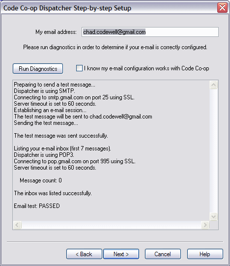

Email Diagnostics
Now, test your settings to ensure that they are correct. Click Run Diagnostics.

This particular screen shows the SMTP/POP3 diagnostics of a Gmail account.
If the test did not PASS
- Click Back and check your settings and Run Diagnostics again.
- For Gmail users: You most likely forgot to enable POP when configuring your Gmail account. Go back to your Gmail configuration internet page and make appropriate changes.
< Back Next: Email Settings >